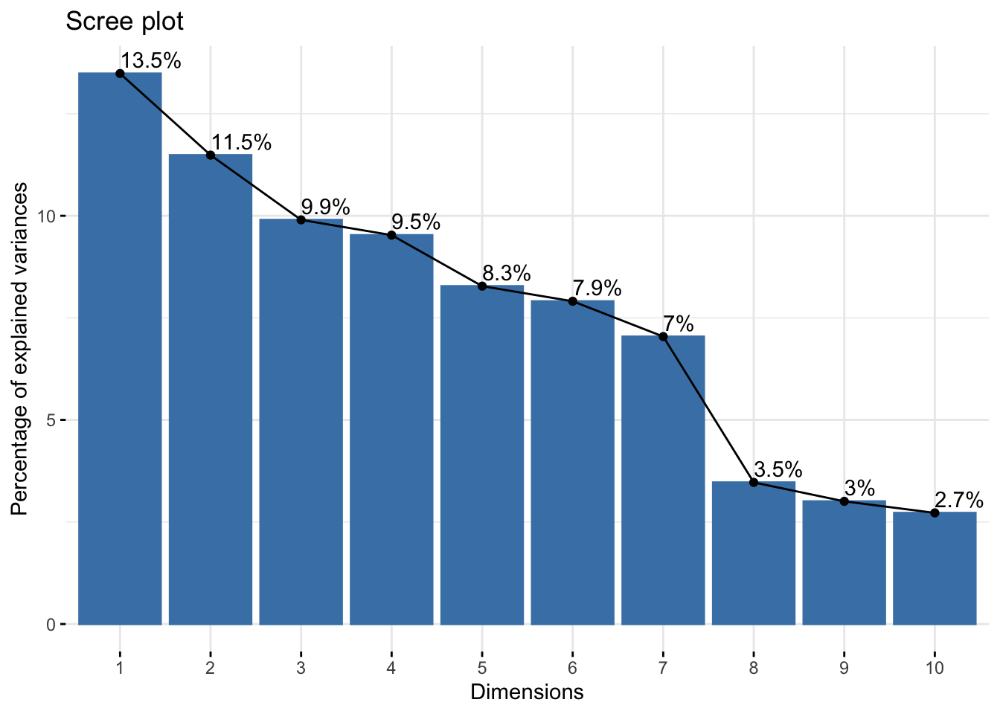

| Variable | Descripción |
|---|---|
| name | Nombre |
| bedrooms | Número de habitaciones |
| beds | Cantidad total de camas |
| amenities | Servicios adicionales como Wifi, Calefacción, Gym, etc. |
| price | Precio por noche |
| number_of_reviews | Número de reseñas recibidas |
| first_review | Fecha de la primera reseña recibida |
| last_review | Fecha de la última reseña recibida |
| review_scores_rating | Puntaje general del alojamiento |
| reviews_per_month | Cantidad de reseñas por mes que recibe el alojamiento |
Airbnb Santiago
R
PCA
EDA
Este es el primero de una serie de post donde se analizará un conjunto de datos sobre alojamientos Airbnb en Santiago de Chile.
Datos - Introducción
En diferentes ciudades del mundo, principalmente en las capitales se ha visto un fuerte incremento de arriendos (alquileres) de viviendas para fines vacacionales/ocio.
Por esto, la ONG Inside Airbnb con el fin de cuantificar el impacto que esto provoca en la comunidad recopila datos (mediante técnicas de scraping) de los alojamientos ofrecidos a través de Airbnb.
En este caso se analizaron los datos de los alojamientos ofrecidos al día 22 de Septiembre en Santiago de Chile.
Análisis Exploratorio
El conjunto de datos tiene 8574 observaciones (alojamientos) con 75 variables (características de los alojamientos). Cada una de estas variables está descrita detalladamente en el Diccionario de datos.
Algunas variables del dataset analizar son:
Variables
Para entender mejor el dataset y las variables que se analizarán veremos la clase actual de cada variable.
|
|
|
|
| character | integer | logical | numeric |
|---|---|---|---|
| 35 | 23 | 3 | 14 |
Se tienen variables del tipo carácter , numérico y booleano. Realizando una verificación al tipo de clase de cada variable se observa que será necesario realizar conversiones de tipo a ciertas variables.
Ej. price está del tipo carácter ya que incluye la divisa pero este formato no es útil para los posteriores análisis.
Se realizarán conversiones de variables de tipo carácter a tipo fecha usando la librería lubridate , librería especializada en manejar variables de tipo fecha.
Algunas conversiones:
# to date
air.stgo$host_since <- ymd(air.stgo$host_since)
# remove % string and numeric
air.stgo$host_response_rate <- str_remove(air.stgo$host_response_rate,"%") %>% as.numeric()
# remove % string and numeric
air.stgo$host_acceptance_rate <- str_remove(air.stgo$host_acceptance_rate,"%") %>% as.numeric()
# to numeric
air.stgo$host_is_superhost <- ifelse(air.stgo$host_is_superhost == "t",1,0)
# to numeric
air.stgo$host_has_profile_pic <- ifelse(air.stgo$host_has_profile_pic == "t",1,0)
# Remove all text and get number
air.stgo$bathrooms_text <- as.numeric(gsub("([0-9]+).*$", "\\1", air.stgo$bathrooms_text))
# remove currency and format to numeric
air.stgo$price <- gsub(",","",gsub("\\$","",air.stgo$price)) %>% as.numeric()
# to numeric
air.stgo$has_availability <- ifelse(air.stgo$has_availability == "t",1,0)
# to numeric
air.stgo$instant_bookable <- ifelse(air.stgo$instant_bookable == "t",1,0)
# to date
air.stgo$first_review <- ymd(air.stgo$first_review)
air.stgo$last_review <- ymd(air.stgo$last_review)Valores Faltantes
Verifiquemos si existen valores faltantes en los datos:
# Calculo % NA por columna
na.count <- apply(air.stgo,2, function(x) 100*sum(is.na(x))/nrow(air.stgo))
# Orden de variables de mayor a menor NA
na.count <- na.count[order(na.count , decreasing = TRUE)]
# Increase margin size
par(mar=c(11,4,4,4))
# Plot de columnas que tienen valores faltantes
barplot(na.count[na.count > 0],
las = 2,
col = "skyblue",
cex.names = 0.7,
main = "Porcentaje de Valores Faltantes")
Se eliminarán directamente las variables:
- neighbourhood_group_cleansed
- bathrooms
- calendar_updated
- license
- host_neighbourhood
ya que estas poseen más del 90% de datos faltantes y no serán útiles para los posteriores análisis.
Eliminación Variables
Además de eliminar las variables que se comentaron en la sección anterior, también deberán eliminarse algunas variables que no aportan información ya que son id específicos o variables que contienen información de tipo descriptivo como links.
También se prescindirá de la información geográfica (latitud y longitud).
# variables con > 90% de faltantes
var.na <- names(na.count[1:5])
# variables id - links
var.drop <- c("id","listing_url","scrape_id","last_scraped","source","picture_url","host_id","host_url","host_about","host_thumbnail_url","host_picture_url","latitude","longitude")
# Quitandolas del dataset
air.stgo <-
air.stgo %>%
select(!all_of(c(var.na,var.drop)))Análisis de Componentes Principales (PCA)
Un PCA es una técnica estadística que permite la reducción de la dimensionalidad de una matriz de datos. Intuitivamente esta técnica nos permitirá explorar relaciones entre variables y observaciones de la manera que generalmente los humanos obtenemos conclusiones, que es a través de gráficos en dos dimensiones.
Casos de uso del PCA
PCA se usa en diversas aplicaciones como compresión de imágenes , biometría , bioinformática , control de calidad , entre otros.
Un PCA sólo se puede realizar sobre variables numéricas. Por ende, en este caso se utilizarán solo variables de tipo numérico (incluyendo binarias 0/1).
Si se quisieran incluir variables de tipo categórico en este análisis, se podría transformar estas variables en variables dummy (0/1 para cada categoría de la variable), aunque no es el objetivo de este análisis y existen otras técnicas más adecuadas para modelar datos de tipo categórico.
# Seleccionar variables de tipo numerico
var.pca <- do.call(rbind, lapply(air.stgo, class))%>%
as.data.frame() %>%
filter(V1 %in% c("numeric", "integer")) %>%
rownames()El escalado y centrado en estas técnicas de reducción de la dimensionalidad es un punto importante a considerar, ya que el no escalar variables puede llevar a conclusiones erróneas.
Escalado y Centrado
Gran parte de las veces es recomendable escalar (varianza unitaria) y centrar (media cero) las variables antes de aplicar PCA, ya que por lo general, se tienen diversas variables con distintas escalas y magnitudes. Analiza tus datos y prueba distintas técnicas de preprocesamiento que sean coherentes con el análisis que estas realizando.
Realizando el preprocesamiento y ajustando lel PCA con la función PCA de la librería FactoMiner:
pca.air <- PCA(scale(air.stgo[,var.pca],
center = TRUE,
scale = TRUE) ,
graph = FALSE ,
scale.unit = FALSE)Una vez ajustado el modelo, el primer gráfico que observaremos será el llamado scree plot. Este gráfico muestra cual es el porcentaje de varianza explicada por cada componente principal.
fviz_eig(pca.air , addlabels = TRUE)
Sin ahondar en lo teórico, es necesario entender que al aplicar esta técnica lo que estamos generando son nuevas variables (variables latentes), las cuales son una combinación lineal de las variables originales e intentan “explicar” la mayor cantidad de información posible de la matriz de datos original.
Se observa que con 7 componentes principales se puede explicar alrededor del 65% de la variabilidad de los datos. A partir de las siguientes componentes el porcentaje explicado por cada componente disminuye considerablemente.
Notemos que el número de variables de la matriz de datos con que se realizó el PCA era de 40 y con la “nueva representación” el número de variables se reduce a 7 captando el 65% de la información original.
Loadings
Para observar las relaciones entre las variables se verán los loading Plot (LP)
Primero vemos el LP de la primera componente (Dim1) vs la segunda componente (Dim2):
fviz_pca_var(pca.air, geom = c("point" , "text") , labelsize = 2)+
ggtitle("Loading Plot")+
theme(plot.title = element_text(hjust = 0.5))
Observando el gráfico se pueden extraer las siguientes conclusiones:
- En la parte derecha del gráfico (1er cuadrante) se observa un grupo de variables muy cercanas. Estas son las variables de tipo “review”, los cuales son los puntajes que dejan los huéspedes al alojamiento una vez que terminaron su estancia. Si vemos sus coordenadas específicas en el LP:
| Dim.1 | Dim.2 | |
|---|---|---|
| review_scores_value | 0.588 | 0.139 |
| review_scores_accuracy | 0.576 | 0.150 |
| review_scores_communication | 0.567 | 0.136 |
| review_scores_checkin | 0.549 | 0.155 |
| review_scores_cleanliness | 0.537 | 0.152 |
| review_scores_location | 0.508 | 0.160 |
| review_scores_rating | 0.497 | 0.156 |
Que estén cercanas nos indica que estas variables están muy correlacionadas entre sí. De esto se puede inferir que al evaluar un alojamiento, el huésped tiende a evaluar de manera similar todos los aspectos (comunicación, limpieza , ubicación , etc). Obviamente la variable review_scores_rating esta cerca de cada uno de estos aspectos ya que este indicador engloba a todos los demás aspectos.
Ya realizando algunas suposiciones más detalladas, podemos observar que la variable más cercana a review_scores_rating es la variable review_scores_location. De esto podríamos suponer que la plataforma le da un mayor peso al ítem ubicación , por lo que la calificación final se asemeja de mayor manera a la puntuación en este ítem.
En la parte izquierda, en el tercer cuadrante, podemos observar a las variables de disponibilidad ( availability ) muy cercanas, por lo que un alojamiento que tenga poca disponibilidad en 30 días tenderá a tener menos disponibilidad en los próximos 60 y 90 días.
Podemos observar que las variables de “review” y “disponibilidad” están en los extremos. Por decirlo de alguna forma tienen la mismas coordenadas pero con signo contrario:
| Dim.1 | Dim.2 | |
|---|---|---|
| review_scores_value | 0.588 | 0.139 |
| review_scores_accuracy | 0.576 | 0.15 |
| review_scores_communication | 0.567 | 0.136 |
| review_scores_checkin | 0.549 | 0.155 |
| review_scores_cleanliness | 0.537 | 0.152 |
| review_scores_location | 0.508 | 0.16 |
| review_scores_rating | 0.497 | 0.156 |
| availability_30 | -0.514 | -0.164 |
| availability_60 | -0.5 | -0.137 |
| availability_90 | -0.476 | -0.116 |
Esto implica que las variables están correlacionadas negativamente, es decir , si aumenta el valor de una tenderá a disminuir el valor de la otra y viceversa.
De esto se puede inferir que si aumentan las puntuaciones de un alojamiento, este tenderá a tener menor disponibilidad en los próximos 30, 60 y 90 días. Esto tiene sentido, ya que los alojamientos con mejores “reviews” tienden a tener menor disponibilidad en la plataforma.